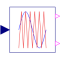
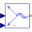
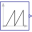
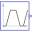
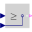
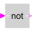
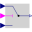
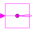
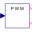

IntersectivePWMIntersective PWM |

|
Diagram
{kind=link}
Information
This information is part of the Modelica Standard Library maintained by the Modelica Association.
The intersective PWM transforms the input space phasor u to the three-phase voltages, and compares them with the reference signals. As long as the phase voltage is greater than the corresponding reference signal, the corresponding fire signal is true. The switching pattern of the negative fire signal is just the inverse of the positive fire signal.
The user can choose from 4 different reference signals:
- Sawtooth1: sawtooth signal, same phase in all three phases
- Sawtooth3: sawtooth signal, phase shift between the three phases = period/3
- Triangle1: triangle signal, same phase in all three phases
- Triangle3: triangle signal, phase shift between the three phases = period/3
Parameters (4)
| f |
Value: Type: Frequency (Hz) Description: Switching frequency |
|---|---|
| startTime |
Value: 0 Type: Time (s) Description: Start time of PWM |
| uMax |
Value: Type: Real Description: Maximum amplitude of signal |
| refType |
Value: PowerConverters.Types.ReferenceType.Triangle3 Type: ReferenceType Description: Type of reference signal |
Connectors (3)
| u |
Type: RealInput[2] Description: Reference space phasor |
|
|---|---|---|
| fire_p |
Type: BooleanOutput[m] Description: Positive fire signal |
|
| fire_n |
Type: BooleanOutput[m] Description: Negative fire signal |
Components (10)
|  | fromSpacePhasor |
Type: FromSpacePhasor |
|---|---|---|
| zero |
Type: Constant |
|
|  | sawTooth |
Type: SawTooth[m] |
|  | trapezoid |
Type: Trapezoid[3] |
|  | greaterEqual |
Type: GreaterEqual[m] |
|  | negation |
Type: Not[m] |
|  | switch1 |
Type: Switch[m] |
| const |
Type: Constant[m] |
|
|  | booleanExpression |
Type: BooleanExpression |
|  | booleanReplicator |
Type: BooleanReplicator |
Used in Components (1)
|  |
Modelica.Electrical.PowerConverters.DCAC.Control PulseWidthModulation |